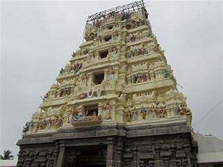

Arulmigu Sri Aranganayagi samedha Sri Uthira Ranganathar Swamy Temple.
It is 2000 years old temple associated with the history of Sri Varadharaja Perumal Kanchipuram.

The main Temple Tower (Rajagopuram)

The lord Vishnu is in Sayana Thirukolam on Adhishesha(five headed snake).